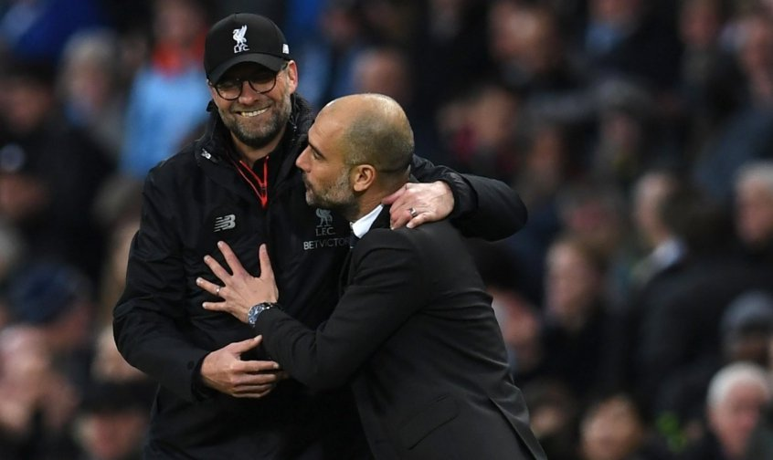

Não podemos definir ao certo qual o melhor treinador da atualidade, mas a forma como Guardiola monta seus nos faz ter certeza que ele é um gênio, classudo, educado, um gentleman, um fanático por futebol. Poucos treinadores estão à sua altura, distantes de números que chegam a impressionar. Não me venha com esse papo de que o Guardiola sempre treina as melhores equipes do mundo, a questão em destaque é como ele dispões os jogadores em campo, como treina suas movimentações. Guardiola vem de uma grande escola, a maior base que o futebol já teve, La masia.
Histórico da carreira de Pep.Veja na tabela abaixo as equipes que Guardiola treinou e quantos gols seus times fez por temporada, não que fazer muitos gols signifique que um time realmente jogue bem, mas diante da qualidade das ligas que Pep Guardiola treinou, mostra o quanto seu time joga pra frente, e que o assistiu sabe que isso realmente era convertido em um futebol mágico:
CLIQUE AQUI PRA ACESSAR À TABELASão grandestreinadores

REFERÊNCIA DOS DADOS DO GUARDIOLA.